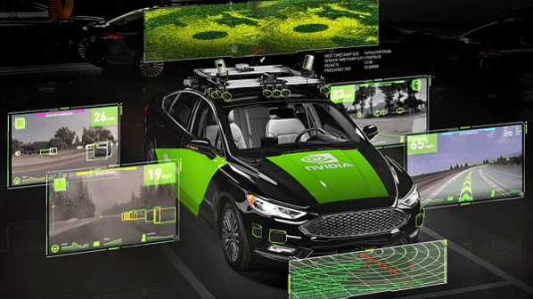
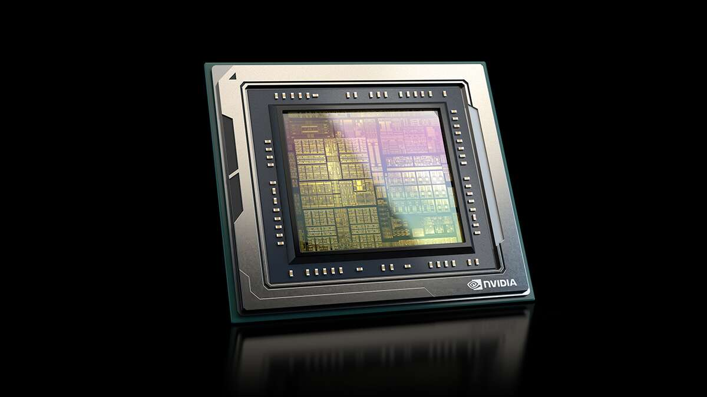
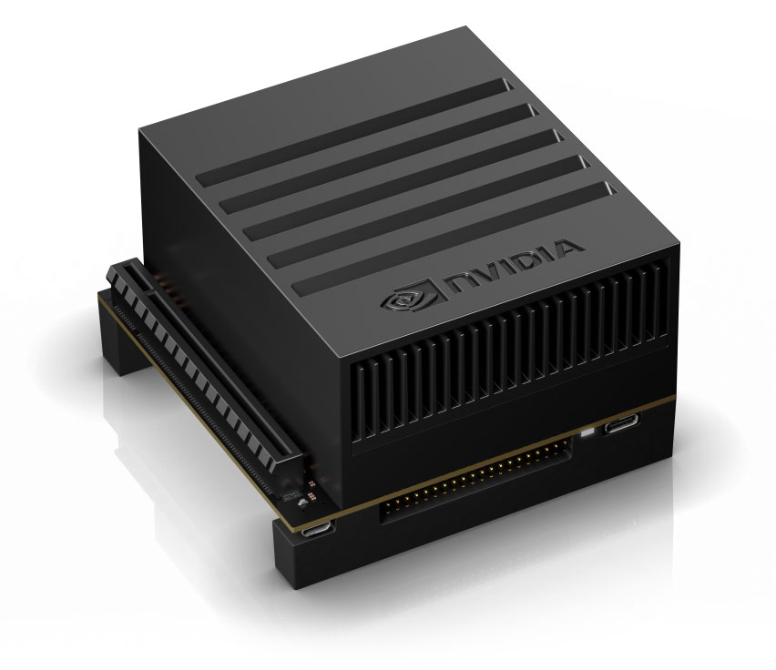
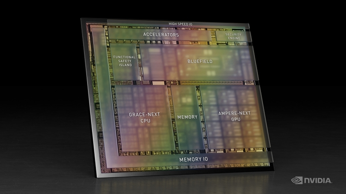
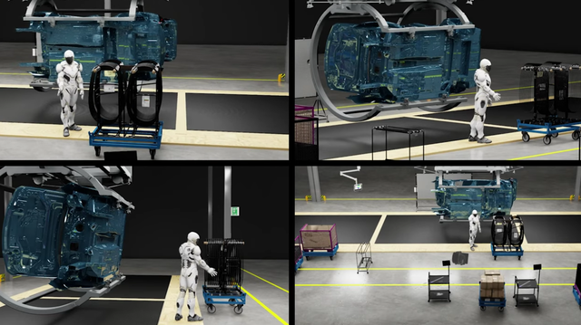

자율주행 분야에서의 엔비디아

자율주행은 인공지능이 핵심이 되는 기술이다. 자율주행을 위해서는 차량 주변의 센서와 카메라들이 도로 위에서 수집하는 데이터를 인공지능이 실시간으로 처리해야한다. 이 때의 인공지능을 구현하기 위해서는 고성능의 GPU가 필요하다. 앞서 설명한 바와 같이 인공지능을 구현하기 위해서는 GPU가 CPU에 비해 훨씬 유리하고 인공지능 구현을 위한 전용 GPU 분야에선 엔비디아가 압도적인 1위를 달리고 있기 때문에 많은 완성차 업체들이 자율주행 인공지능을 개발에 엔비디아의 GPU를 도입하고 있다.

nvidia 자율주행 GPU Orin

nvidia 자율주행 모듈 Xvier

출시 예정인 Atlan 자율주행 칩
엔비디아의 모든 기술을 투입한 집약체, 옴니버스
엔비디아는 최고의 그랙픽 연산 처리 기술과 최고의 인공지능 기술을 결합하여 인공적인 가상의 세계를 만들어 가고 있다. 엔비디아가 출시한 옴니버스라는 플랫폼은 현실의 세계와 똑같은 가상의 세계를 만들 수 있는 플랫폼이다. 옴니버스는 인공지능을 이용해 현실의 물리 현상들을 가상의 세계에서 똑같이 그래픽으로 구현해주는 기능을 갖고 있다. 현실의 세계를 가상으로 만들어내 시뮬레이션 할 수 있는 것이다. 엔비디아는 옴니버스 플랫폼을 앞으로 더 발전시켜 현실과 연동되는 가상의 세계를 만들어내고 그 안에 가상의 인물들과 존재들을 만들어내 현실 외의 또 하나의 세계를 창조하려는 비전을 갖고 있다.

--설명란--
body가 로드될 때 setInterval()과 window.scrollBy()를 이용하여 윈도우가 자동으로 아래로 스크롤하도록 해주었습니다.